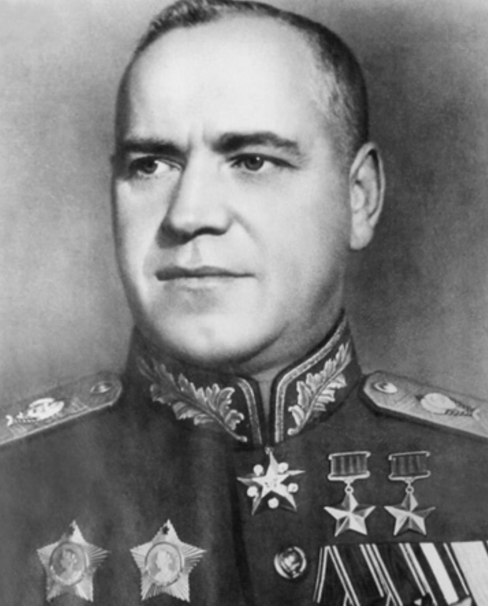

Nom : Guéorgui Konstantinovitch Joukov
Dates : 1er décembre 1896 – 18 juin 1974
Nationalité : Soviétique
Guéorgui Joukov est considéré comme l’un des plus grands commandants militaires de la Seconde Guerre mondiale. Figure centrale du front de l’Est, il devient le maréchal le plus célèbre de l’Union soviétique grâce à ses victoires décisives contre l’Allemagne nazie.
Joukov joue un rôle déterminant dans la défense de Moscou en 1941, puis dans la contre-offensive soviétique qui stoppe l’avancée allemande. Il coordonne ensuite les opérations majeures de Stalingrad et de Koursk, avant de superviser l’avancée soviétique jusqu’à Berlin en 1945. C’est lui qui reçoit officiellement la capitulation allemande au nom de l’URSS.
Joukov est étudié comme l’un des plus grands stratèges de la guerre moderne. Ses décisions ont joué un rôle essentiel dans l’effondrement de la Wehrmacht sur le front de l’Est. Il reste une figure emblématique de la victoire soviétique et un symbole de la résistance face à l’invasion allemande.